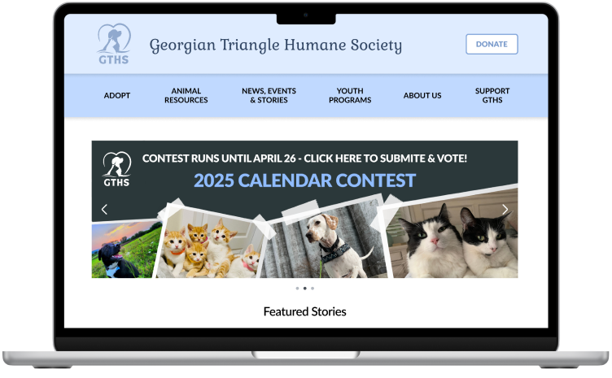
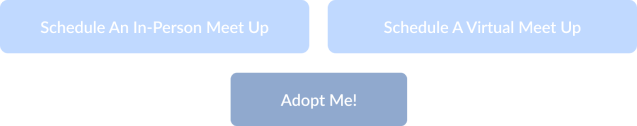
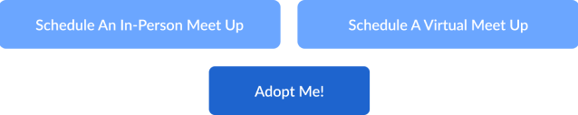
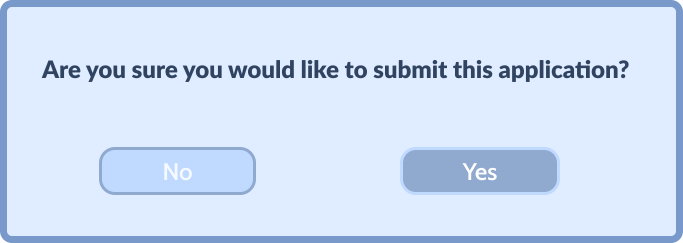
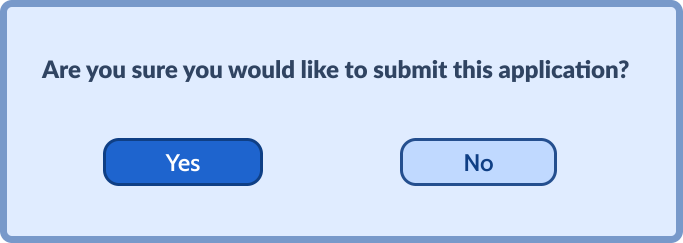

Selena Clark, Joshua Figura, Lauren Chan
The Georgian Triangle Humane Society (GTHS) is a nonprofit dedicated to finding loving homes for animals in need. As project manager, I oversaw the redesign of the website. Our goal was to create a user-friendly platform to simplify the adoption process and attract more adopters.
Users have difficulty navigating the GTHS website, primarily due to its lack of organization and outdated appearance. Additionally, finding the adoption form poses a challenge for users as its location on the website is unclear.
Our redesigned website has improvements in organization, appearance, and enhancing overall usability. We implemented clearer navigation structures, legible fonts, and a consistent colour scheme, ensuring an efficient adoption process for users.
Interface Analysis & User Research
Definition & Ideation
Information Architecture
Interaction Design
Over a 3 week period, our group conducted four semi-structured remote Zoom interviews and distributed a survey to gather insights from 10 respondents, adhering to a meticulously crafted interview and usability testing plan.
Individuals who have previously adopted a pet from a non-profit organization.
World Wildlife Fund (WWF)
A global conservation organization dedicated to protecting the environment and wildlife. While it focuses on broader conservation efforts worldwide, it shares a common goal with non-profit animal shelters in advocating for the welfare and preservation of animals. Features include user-friendly navigation and a large variety of animals available for adoption with intuitive filter options.
Canadian Red Cross
An international humanitarian organization known for its disaster relief and blood donation services. Although its primary focus is on emergency response and humanitarian aid, it operates as a non-profit organization with a mission centred around helping and supporting those in need. Features include authentic stories and compelling images, and a focus on accountability and trust.
Stray to Play
A volunteer-run charity organization dedicated to finding loving, lasting homes for stray, abandoned, abused or surrendered dogs through collaboration with volunteers, shelter partners, and other rescues in our community. Features include simple design and intuitive navigation, and easier adoption form access.
Several users struggled to find the adoption form as it was not located on the individual pet profile pages. Users wanted detailed descriptions, various pictures, videos, and transparent adoption fee information. Users preferred having specific characteristics available. This includes details such as age, size, temperament, health status, and compatibility with other pets.
If you were to adopt a pet, what characteristics would you take into consideration?
What features do you find most important when browsing a pet adoption site?
About
Age: 23
Occupation: Graphic Designer
Location: Collingwood, ON
Marital Status: Single
The Georgian Triangle Humane Society (GTHS) was designed to help find loving homes for animals in need. We have observed that our service isn’t meeting the specific needs of pet owners in regards to pet profiles and applications, which is causing a decline in pets getting adopted. How might we improve the GTHS website so that our users are satisfied with the level of detail and clarity on the pet profiles based on an increase in pet applications and pet adoptions?
Our organization, the Georgian Triangle Humane Society (GTHS), is developing a detailed pet adoption website to help people looking to adopt a pet find the perfect companion. We're better because we provide comprehensive pet profiles that include specific characteristics such as age, breed, temperament, activity level, colour, and size, enabling informed decisions for a better fit. We're believable because our approach is based on user insights, and our mission focuses on finding loving homes for pets.
Original
Iterated
Original
Iterated
Clickable Prototype Click here to view the prototype!